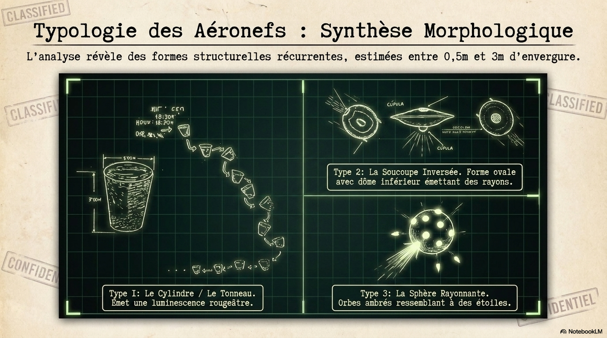
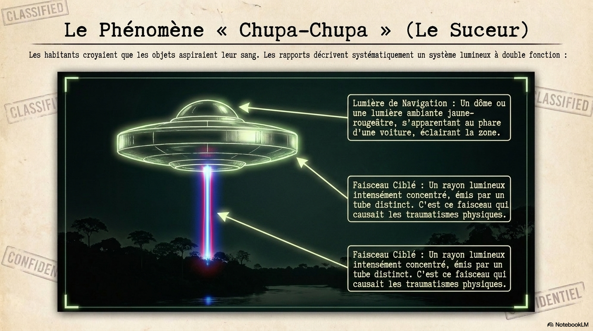
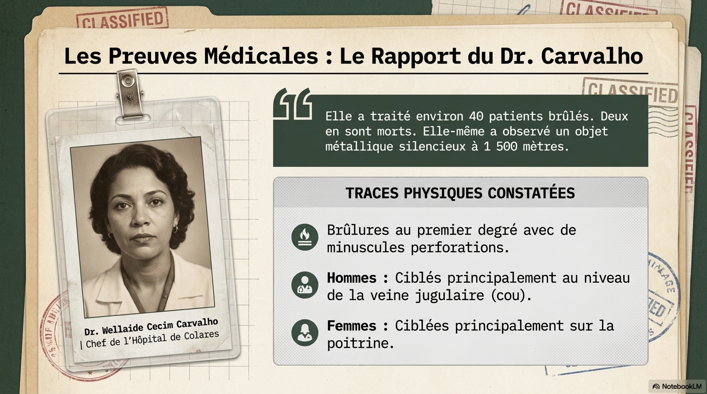
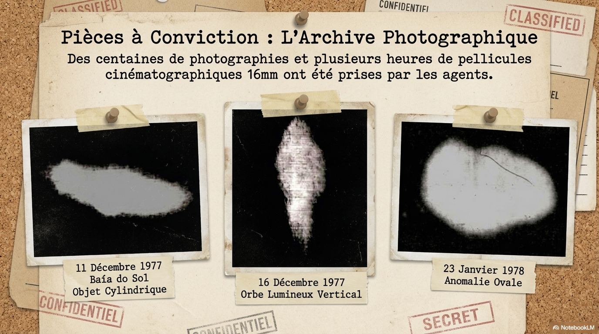
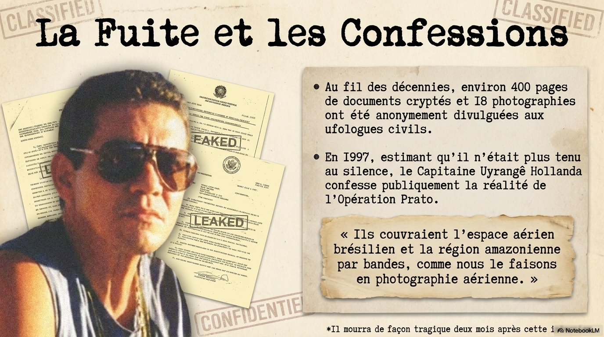

Opération Prato (1977–1978)
La première enquête officielle de la Force aérienne brésilienne sur une vague d'observations d'OVNIs à Colares, dans l'État du Pará — l'une des plus significatives de l'histoire de l'ufologie mondiale.
Contexte : la vague de Colares
La vague débute en avril 1977 dans l'État voisin du Maranhão avant de se déplacer vers l'ouest, envahissant la région de Colares et de Belém, puis continuant vers Manaus et l'Amazonie. Les habitants de Colares et d'une trentaine de villages alentour signalent des objets lumineux volant à basse altitude, certains émettant des faisceaux de lumière rougeâtre ou bleue. Ces rayons provoquent chez les victimes une paralysie partielle, des engourdissements, des céphalées, des brûlures et des symptômes ressemblant à des chocs électriques. La population locale surnomme ces appareils « Chupa-Chupa » (du verbe chupar : sucer), en référence à la sensation de vide ou de succion ressentie lors des attaques.
Débordés par la panique, plusieurs maires de la région font appel à la Force aérienne brésilienne (FAB) pour intervenir. C'est à la suite de ces appels que l'opération Prato est lancée.

L'opération Prato
L'enquête est menée d'octobre 1977 à janvier 1978 par une petite équipe de la base aérienne de Belém, composée du capitaine Uyrangê Hollanda (chef des opérations du renseignement militaire, branche A2) et de six sous-officiers, dont le sergent Flávio Costa comme adjoint. L'équipe ne dispose que d'un théodolite, d'appareils photo et de magnétophones.
Le nom « Prato » a été choisi personnellement par le capitaine Hollanda. Comme il l'expliquera plus tard : « Je ne pouvais pas appeler ça Opération Soucoupe Volante. J'ai choisi un cousin de la soucoupe — l'assiette. »
En quatre mois, l'équipe interroge des centaines de témoins à Colares et dans une trentaine d'autres villages, et observe elle-même des OVNIs à de nombreuses reprises. Elle constitue un dossier final comprenant environ 500 pages de documents, plusieurs centaines de photographies, des films cinématographiques montrant des objets, y compris certains plongeant dans ou sortant des eaux de la baie de Marajó, ainsi que de nombreuses cartes et croquis. Certains films et photos ont été pris à 3h25 du matin le 11 décembre 1977, à une distance estimée de 70 mètres du navire des enquêteurs.
L'enquête officielle est suspendue par le brigadier Protázio Lopes de Oliveira, commandant de la base de Belém, sans explication publique. Elle se poursuit toutefois officieusement tout au long de 1978, sous l'impulsion personnelle des enquêteurs. L'ensemble des documents est transmis au quartier général de la FAB à Brasília.

Témoignages et victimes
Les rapports documentent plus de 300 observations et rencontres. Les symptômes récurrents chez les victimes touchées par un faisceau lumineux sont : paralysie partielle, engourdissement progressif des pieds à la tête, frissons, maux de tête, enrouement et brûlures localisées. Plusieurs victimes ont souffert de ces effets pendant plusieurs jours.
Le Dr Wellaide Cecim Carvalho, médecin-chef de l'hôpital de Colares à l'époque, a déclaré avoir soigné environ quarante personnes brûlées, dont deux sont décédées. Elle a confirmé aux chercheurs que les membres de l'équipe militaire étaient informés de ces cas. Les documents divulgués ne mentionnent que peu de décès, ce qui suggère que les archives officielles pourraient être incomplètes.
Parmi les observations marquantes figure celle du prêtre américain installé au Brésil, le père Alfredo de La Õ (13 octobre 1977, 3h25), qui décrit un objet lumineux rouge vif se déplaçant à 20 mètres au-dessus de la baie, plus vite qu'un avion à réaction, reflétant sa lumière sur l'eau, à 75 mètres de sa position. Le Dr Wellaide elle-même observe un objet conique-cylindrique de 3 mètres de large tournoyant à basse altitude les 16 et 22 octobre 1977, en présence d'autres témoins.


Chronologie
- Avril 1977 : début de la vague dans l'État du Maranhão.
- Août–septembre 1977 : premiers cas documentés dans la région de Colares et Santo Antônio do Tauá.
- Octobre 1977 : arrivée de l'équipe Hollanda à Colares ; début officiel de l'opération Prato.
- Décembre 1977 : photographies et films d'objets pris par les militaires eux-mêmes.
- Janvier 1978 : suspension officielle de l'opération par le brigadier Protázio.
- 1978 (officieux) : l'enquête se poursuit à l'initiative personnelle des enquêteurs.
- 1997 : le colonel en retraite Hollanda accorde plusieurs interviews, notamment au chercheur Bob Pratt et à sa collègue Cynthia Luce. Il décrit la vague comme couvrant un immense territoire : « Ils se déplaçaient du Maranhão vers Colares, Belém, Monte Alegre, Santarém et Manaus. Ils couvraient l'espace aérien brésilien et la région amazonienne en bandes, comme nous le faisons en photographie aérienne. »
- Environ deux mois après ses interviews (1997) : Hollanda est retrouvé mort. Sa mort est officiellement classée suicide.
- 20 mai 2005 : lors de réunions entre ufologues brésiliens et généraux de la FAB à Brasília, trois généraux reconnaissent que l'armée de l'air suit les OVNIs depuis 1954 (sous le nom de trafic « H ») et s'engagent à ouvrir les archives. Une centaine de photos et 160 documents de l'opération Prato sont présentés aux ufologues lors de ces réunions.
Documents et divulgations
Les archives officielles complètes restent partiellement classifiées. Toutefois, des photocopies de nombreux documents de l'opération Prato ont été discrètement transmises à des chercheurs civils au fil des années. Le chercheur Bob Pratt a ainsi pu réunir environ 400 pages de documents (dont 18 photographies avec identifiants au dos), reçus en trois lots entre 1991 et 1999. Ces documents contiennent les résumés de plus de 300 observations et rencontres, avec des codes de localisation et des pseudonymes pour certains témoins.
Les documents ne sont pas toujours dans l'ordre chronologique, et certaines observations apparaissent en double avec des niveaux de détail différents — probablement parce que Hollanda et Flávio Costa ont révisé leurs rapports sans détruire les versions antérieures.


Contexte plus large : l'engagement de la FAB
L'opération Prato n'est pas isolée. Dès 1954, un colonel brésilien (João Adil de Oliveira) avait initié une première étude militaire sur les OVNIs. Un second bureau, le SIOANI, avait été créé vers 1966. L'incident le plus médiatisé reste celui du 19 mai 1986, nuit durant laquelle 21 OVNIs ont été détectés sur les radars de tout le pays : six avions de chasse armés ont décollé de bases près de Rio de Janeiro et Brasília pour les intercepter. Le ministre de l'Air d'alors, Octávio Moreira Lima, a déclaré publiquement : « Techniquement, il n'y a pas d'explication. »
Pistes d'analyse
Évaluer la cohérence entre les témoignages médicaux contemporains (Dr Wellaide) et les documents militaires divulgués. Comprendre les raisons de la suspension prématurée de l'enquête par le brigadier Protázio. Interroger les conditions du décès du colonel Hollanda, survenu peu après ses premières déclarations publiques. Mesurer l'écart entre les 500 pages envoyées au quartier général et les ~400 pages connues des chercheurs civils.
Source principale
- Bob Pratt, Operação Prato — article et traduction des documents militaires, MUFON (archivé sur The Black Vault, 2009). Lire le document (PDF)
- Daniel Rebisso Giese, Vampiros Extraterrestres na Amazônia.
- Jacques Vallée, Confrontations, 1991.
- Egon Kragel et Yves Couprie, OVNIS, Enquête sur un secret d'état, 2010.
- Erwan David, ufo-data-elk — dépôt de données et d'analyse sur les OVNIs (même auteur que ce site).